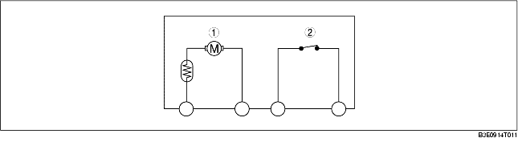

TRUNK LID LATCH AND OPENER CONSTRUCTION
B3E091467002T02
• The following parts are built into the trunk lid latch and lock actuator:
-
- A latch switch that turns on/off with the opening/closing of the trunk lid.
-
• When the trunk lid opens, the trunk lid latch switch is on.
-
• When the trunk lid is closed, the trunk lid latch switch is off.
-
- An opener that latches/unlatches the latch.

.
|
1
|
Opener
|
|
2
|
Trunk lid latch switch
|